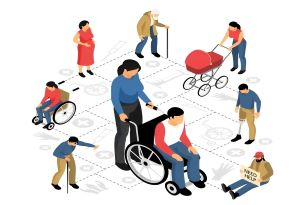

Participations Restriction
Participation restriction is one element of impairment, according to the World Health Organization's International Classification of Functioning, Disability, and Health (WHO-ICF). Participation restriction refers to health issues that can make it difficult for people to participate in many life events. It is reasonable to anticipate that the prevalence of participation restriction rises among the elderly.
• Managing domestic life
• Engaging in major life areas (education, employment, managing money or finances)
• Engaging in community, social, and civic life